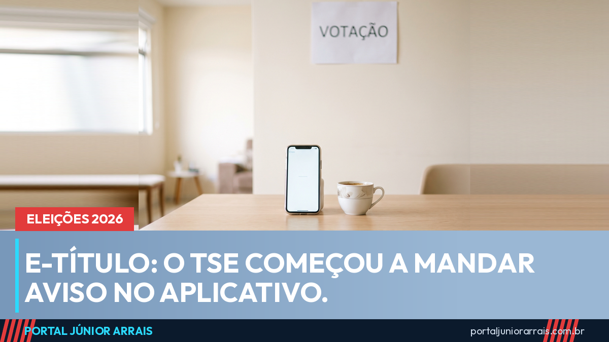

e-Título começa a enviar avisos do TSE; saiba como reconhecer mensagem falsa de multa

O Tribunal Superior Eleitoral começou a enviar notificações oficiais pelo aplicativo e-Título na quinta-feira, 17 de setembro, a duas semanas do primeiro turno. As mensagens orientam o eleitor a conferir o local de votação, manter o aplicativo atualizado e acessar informações e serviços eleitorais. O primeiro turno é no domingo, 4 de outubro.
O envio continua durante todo o período eleitoral, inclusive no intervalo entre o primeiro e o segundo turnos. Segundo o tribunal, a ideia é ter um canal direto e reconhecível de comunicação com o eleitorado, para que a pessoa consiga distinguir o que é comunicado oficial do que é boato.
Por que isso importa mais do que parece
Todo ano eleitoral o celular do brasileiro vira campo de disputa. Circulam mensagens sobre mudança de local de votação que não houve, sobre título cancelado que não foi cancelado e, principalmente, sobre multa a pagar. O eleitor recebe, se assusta e clica.
Com a notificação dentro do aplicativo oficial, passa a existir um lugar conhecido para conferir. O que chega por lá veio da Justiça Eleitoral; o que chega por SMS, e-mail ou grupo de mensagem, com link e pedido de pagamento, é onde mora o problema.
Cuidado com golpe
A fraude da falsa multa eleitoral é a mais comum deste período, e ela já está rodando. A mensagem chega dizendo que existe pendência com a Justiça Eleitoral, que o título está irregular ou que o CPF será suspenso, e traz um link para pagamento imediato, muitas vezes com um QR Code de Pix e um prazo curto para criar pressão. O valor pedido costuma ser baixo — poucos reais — justamente para a pessoa pagar sem pensar.
A Justiça Eleitoral não cobra multa por mensagem com link de pagamento, não pede Pix, senha, número de cartão nem foto de documento, e não ameaça bloquear CPF por mensagem de celular. Qualquer aviso oficial aparece no aplicativo e-Título ou no cartório eleitoral. Se você recebeu uma cobrança dessas, não clique e não pague; e se já pagou, procure um profissional de sua confiança para avaliar o que fazer em seguida.
Uma confusão que volta toda eleição
Vale repetir o que o portal já explicou: deixar de votar não corta Bolsa Família, BPC nem aposentadoria do INSS. São coisas separadas — a pendência eleitoral tem efeitos próprios, previstos em lei, e nenhum deles é o cancelamento de benefício social. Esse boato reaparece a cada pleito e costuma vir acompanhado justamente da oferta de "regularização" mediante pagamento.
Quem vai trabalhar na eleição também tem regra própria: o portal detalhou que o mesário tem direito a folga pelo dobro dos dias trabalhados.
Conteúdo informativo — não substitui orientação individualizada sobre o seu caso.
Júnior Arrais · Editor do Portal Júnior Arrais
Comunicador de Ubá (MG). Escreve todos os dias sobre benefícios sociais, INSS, trabalho e economia do dia a dia, a partir do Diário Oficial, de portarias e de fontes oficiais, em linguagem simples. Conheça a linha editorial e a política de correções do portal.